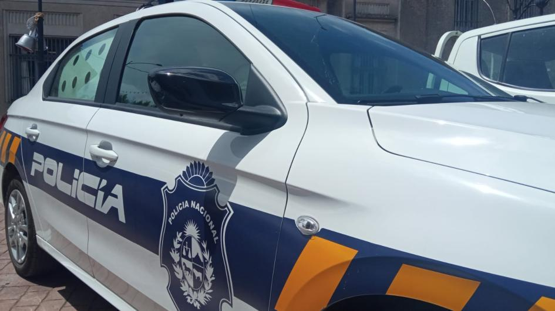
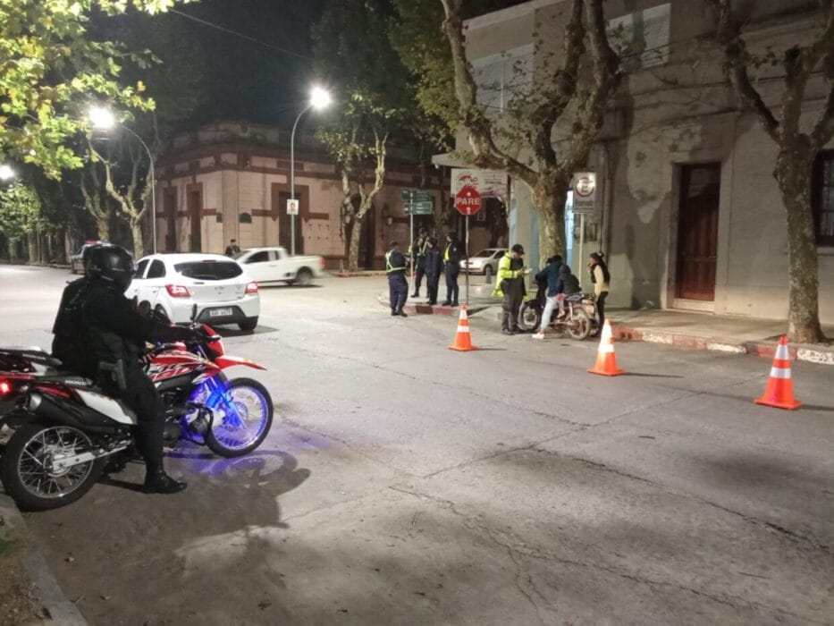
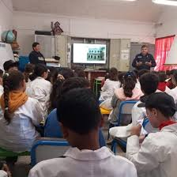

Refuerzan operativos de patrullaje en el centro de Durazno
La Jefatura de Policía de Durazno implementó un nuevo plan de patrullaje preventivo en la zona comercial y áreas de mayor tránsito.
Noticias claras y actuales del Departamento de Durazno
Información y novedades sobre la jefatura de policía, patrullajes y operativos en el departamento.

La Jefatura de Policía de Durazno implementó un nuevo plan de patrullaje preventivo en la zona comercial y áreas de mayor tránsito.
Vecinos y autoridades policiales se reunieron para coordinar medidas de prevención y mejorar los canales de denuncia.

Conocé los consejos clave emitidos por el Ministerio del Interior para el tránsito y el cuidado personal en la ciudad.

Se instalaron nuevas cámaras de monitoreo en accesos y zonas transitadas para fortalecer la prevención y respuesta policial.

Operativos especiales verifican documentación y realizan pruebas de espirometría durante los fines de semana.

La Policía Comunitaria capacita a estudiantes sobre el uso seguro de redes sociales y cuidado de la privacidad.